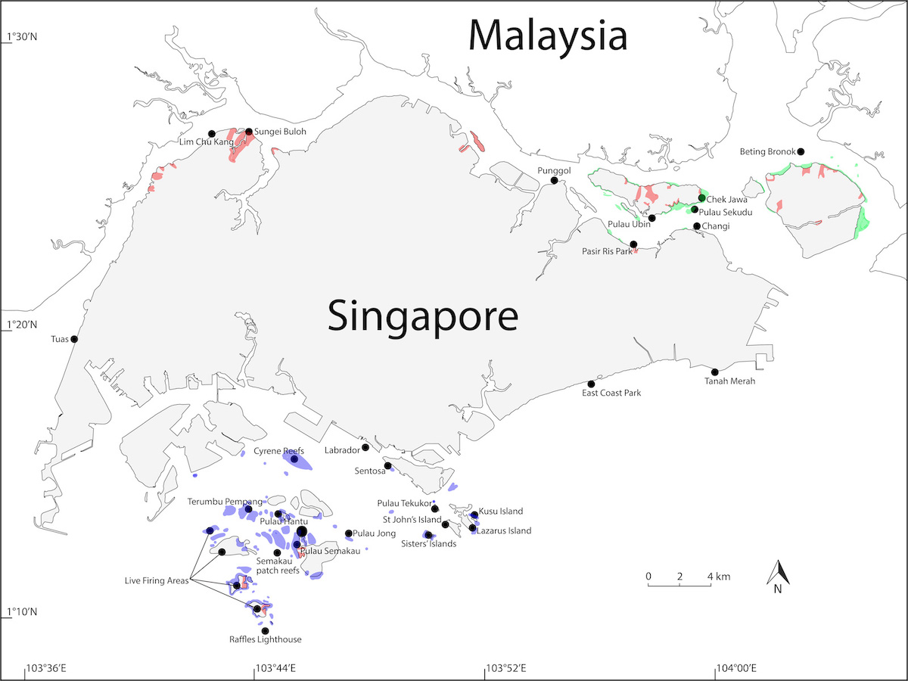

Map showing distribution of coral reefs, mangrove forests and sand/mudflats shaded in blue, red and green, respectively. Published in Lim et al. (2020).
Singapore is part of the Indo-Malayan realm in the tropics, which is well known for being a biodiversity hotspot. The warm and shallow tropical waters surrounding Singapore provide a prime environment for corals to proliferate. Indeed, more than 250 species of corals can be found in Singapore’s waters. These corals collectively make up our reef system which serves many ecologically important functions, such as coastal protection and recreation.
What is a coral reef?
Coral reefs are home to many marine organisms. They are known to be amongst the most diverse ecosystems in the world. Reef-building coral species synthesise calcium carbonate from their environment to form hard exoskeletons. As they continue to expand upward and outward, they eventually form large magnificent underwater structures known as coral reefs.
This reef-building process is heavily dependent on tiny single-celled algae that live within these corals, endosymbionts of the family Symbiodiniaceae (commonly known as zooxanthellae), which are the powerhouse of corals. They synthesise energy from the sun, providing nutrition for their coral hosts to secrete limestone, or calcium carbonate, to expand their exoskeletal armour. In turn, corals provide a suitable and protected environment for the endosymbionts to reside in. Therefore, the process of reef expansion is intricately linked to this host-symbiont relationship between corals and zooxanthellae.
Threats to Singapore reefs
The most significant cause of reef degradation in Singapore is sedimentation. Land reclamation, dredging of shipping channels and dumping of earth spoils, have increased the sediment load. Loss of coral reefs to land reclamation have occurred along the southwest coast of the mainland and on several of the offshore southern islands. Increased sedimentation have affected the remaining reefs in two ways: (1) by causing a slow but steady reduction in live coral cover, and (2) by reducing the lower depth limit of coral growth on reef slopes. Surveys since 1986 indicate that live coral cover have decreased by up to 20% on some reefs, although other reefs register no impact. The reduction in sunlight penetration have furthermore reduced the lower depth limit of coral growth. In the 1970s, coral growth extended to 10 m down the reef slope. Today, growth is restricted to 6 m although some coral species still occur at the 8-m depth.
Accidental oil spills remain an ever-present threat. However the 1997 Evoikos oil spill (27,000 tonnes) did not seriously affect coral reefs, although oil contaminated the upper parts of some reef flats.
Other activities that also have an impact on the reefs include recreational and tourist-related use. Negligent or inexperienced divers without proper buoyancy control leave a trail of broken corals. Anchor damage is caused by fishing boats and pleasure craft.

Careless diving or boating activities can severely damage fragile, slow-growing corals! Practise good buoyancy control, and leave reef organisms where you find them!
 As with coral reefs around the world, Singapore reefs suffered a mass bleaching event in June 1998 and again in June 2010. Sea temperatures around Pulau Hantu and St John's Island were elevated by 1-2 degrees C from March to June 1998. 50-90% of all reef organisms in Singapore were affected, particularly the hard corals, soft corals and anemones. The bleaching effect extended to 6 m, the lower growth depth limit for coral growth locally. Sea temperatures returned to normal in August 1998. A study of the stressed colonies was undertaken during this period. 10 out of 35 coral colonies died from the stress, and the genera Sinularia and Euphyllia were most affected. Other colonies showed various signs of stress, such as growth of turf algae and silt accumulation, leading to partial mortality.
As with coral reefs around the world, Singapore reefs suffered a mass bleaching event in June 1998 and again in June 2010. Sea temperatures around Pulau Hantu and St John's Island were elevated by 1-2 degrees C from March to June 1998. 50-90% of all reef organisms in Singapore were affected, particularly the hard corals, soft corals and anemones. The bleaching effect extended to 6 m, the lower growth depth limit for coral growth locally. Sea temperatures returned to normal in August 1998. A study of the stressed colonies was undertaken during this period. 10 out of 35 coral colonies died from the stress, and the genera Sinularia and Euphyllia were most affected. Other colonies showed various signs of stress, such as growth of turf algae and silt accumulation, leading to partial mortality.